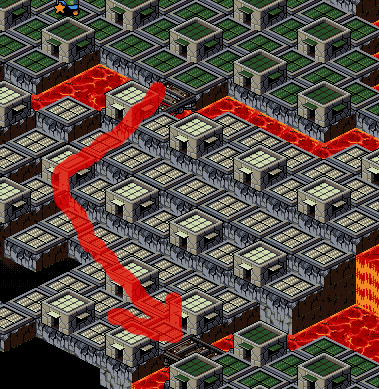
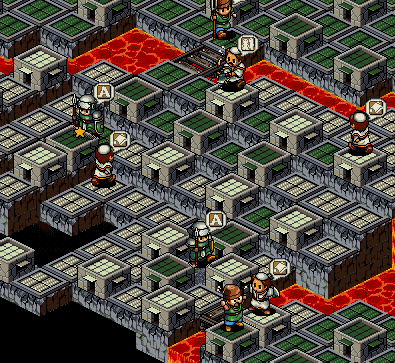
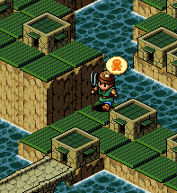
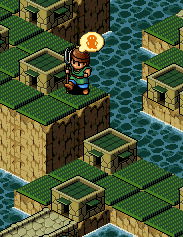
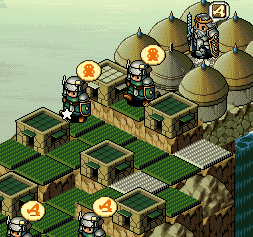
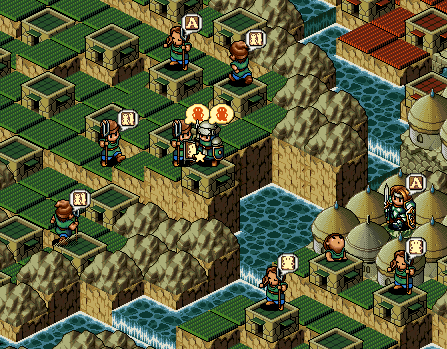
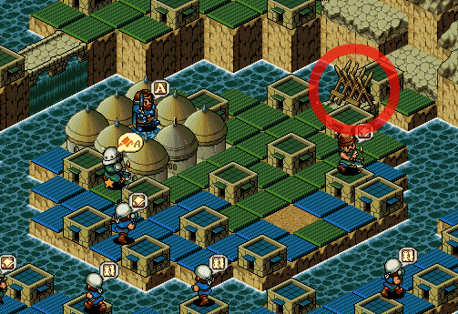
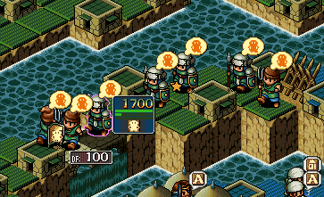

| 概要 | 情報 | ステージ攻略 |
| 地図 | テクニック | モナモナ攻略へ |
|
家を利用した敵陣での移動 敵陣を素早く移動する場合、敵の家と家の間にある畑に自国の家を作りながら移動すると、短縮することができます。  (矢印のように進みたいとすると・・・)  (こんな感じで) |
|
家を利用した高台への移動 ヒント面でも紹介されていましたが、家を崖に隣接して建てることで、崖を行き来することができるようになります。 様々なマップで利用できるテクニックです。  (この崖を上に行きたければ)  (こうする) |
|
占領率100%を達成する方法 色々な方法がありますが、管理人が一番よく使うのが家を建てて終了させる方法です。 下の画像のように、敵国の家を最後の一軒まで減らし、周囲を自軍の兵士で包囲します。そして、家以外の全ての領地が自国のものとなったところで、「家を作る」の指示を出し終了させます。  (全部が緑になるまで待機中・・・) |
|
治外法権モード ロードモナークから引き継がれているテクニックらしいです。 下の画像のように、城のある場所と行き来できない場所にある自国の家は税金が0%となるので、兵士が次々と生まれます。 これを利用して兵力を一気に増やしたりできますが、お金が入らないので橋を架けたりして行き来できるようにしないと大変なことになったりします。  (行き来できないと税金が0%なので兵士がどんどん生まれる)  (逆にこれを利用して敵国の資金を枯渇させることも可能) |
|
無駄な出費を抑えつつ兵力を増やす 兵士の体重が2000gを越えるとユニット自体の維持費がかかります。 しかし、兵士の体重が2000gを越えないようにMユニットを大量に用意しておけば、無駄な出費を抑えて莫大な兵力を用意できます。 ただし、用意した兵士を合体させて動かす際にすさまじい維持費がかかるので、あらかじめお金を用意しておかないと、自国が資金難で破滅します。  (目標まで後何体?) |
| 概要 | 情報 | ステージ攻略 |
| 地図 | テクニック | モナモナ攻略へ |